Schedule
Last time…
- Clifford circuits and graph-like diagrams
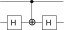
\(\propto\)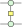
- Graph states and local Cliffords
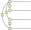
\(\ket{G}\) 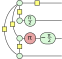
\(\bigl(\bigotimes_i C_i\bigr)\ket{G}\) - The clique identity and local complementation
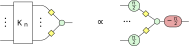
\(G\)\(\longrightarrow\)\(G\star a\) - Removing an internal \(\pm\pi/2\) spider
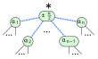
\(\propto\)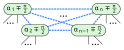

Setup
| Generators \(\mathcal G\) | Interpretation \(\llbracket\,\cdot\,\rrbracket\) |
|---|---|
| \(\ket{0}^{\otimes n}\!\bra{0}^{\otimes m}+ e^{i\alpha}\ket{1}^{\otimes n}\!\bra{1}^{\otimes m}\) | |
| \(\ket{+}^{\otimes n}\!\bra{+}^{\otimes m}+ e^{i\alpha}\ket{-}^{\otimes n}\!\bra{-}^{\otimes m}\) | |
 |
\(\ket{+}\!\bra{0}+\ket{-}\!\bra{1}\) |
| \(\ket{0}\!\bra{0}+\ket{1}\!\bra{1}\) | |
| \(\ket{00}+\ket{11}\) | |
 |
\(\bra{00}+\bra{11}\) |
 |
\(\sum\limits_{i,j\in\{0,1\}}\ket{ij}\!\bra{ji}\) |
\[
\ket0=\begin{pmatrix}1\\0\end{pmatrix}\qquad\ket1=\begin{pmatrix}0\\1\end{pmatrix}\qquad\ket+=\tfrac{1}{\sqrt2}\begin{pmatrix}1\\1\end{pmatrix}\qquad\ket-=\tfrac{1}{\sqrt2}\begin{pmatrix}1\\-1\end{pmatrix}
\]
Setup

Scalar Completeness
Proposition 5.1.8.
Every ZX-diagram can be rewritten in graph-like form.
Write \(\Gamma(G,\alpha)\) for the scalar graph with one green spider of phase \(\alpha_v\) per vertex and one Hadamard per edge.
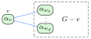
Pick any vertex \(v\). Its neighbours are \(w_1,\ldots,w_d\) with \(d=\deg(v)\). All edges inside \(G-v\) are arbitrary. For \(d=0\) the spider is isolated. For an empty vertex set the graph is the empty diagram.
§5.5.1. A normal form for scalars.
Use the scalar-accurate rules of Figure 3.2. The graph-like rewrites may produce detached scalars.
Let \(S\) be the single-wire scalar and \(T\) the triple-wire scalar. Write \(M_t=S^{\max(t,0)}T^{\max(-t,0)}\).
A Hadamard self-loop contributes \(T\) and adds \(\pi\) to the spider phase. Removing two parallel Hadamard edges contributes \(T^2\). Keep all detached factors.
\(S=\)\(T=\)
Lemma 5.2.9. Local complementation.
At an internal vertex \(v\) of phase \(\varepsilon\pi/2\) with \(\varepsilon=\pm1\), toggle adjacency between every two distinct neighbours and remove \(v\) from the active graph. Each neighbour acquires \(-\varepsilon\pi/2\) modulo \(2\pi\).
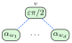
Neighbours can already be joined in any pattern, with arbitrary connections to the rest of the graph. Repeat while a nonisolated half-phase vertex remains.
Remark 5.2.10. The detached scalar.
Local complementation leaves the isolated spider \(Z_{\varepsilon\pi/2}\) of the same phase. Normalization also changes when the number of Hadamard edges changes.
Let \(S\) be the single-wire scalar and \(T\) the triple-wire scalar. Write \(M_t=S^{\max(t,0)}T^{\max(-t,0)}\).
With \(H=(G\star v)-v\) and the updated neighbour phases,
\(\Gamma(G,\alpha)=M_{|E(H)|-|E(G)|}\, Z_{\varepsilon\pi/2}\, \Gamma(H,\alpha^{\prime}).\)
Lemma 5.2.11. Pivot simplification.
Write the phases of \(u,v\) as \(j\pi,k\pi\), with \(j,k\in\{0,1\}\). \(A\) and \(B\) are the exclusive neighbours of \(u\) and \(v\). \(C\) is their common neighbourhood. Exclude the endpoints themselves.
Delete \(u,v\) from the active graph and toggle adjacency between every two vertices in different sets. Add \(k\pi,\ (j+k+1)\pi,\ j\pi\) to vertices in \(A,C,B\), modulo \(2\pi\). All other edges and phases carry through. Any of the three sets can be empty. In the example \(j=k=1\), so all three neighbours gain \(\pi\) modulo \(2\pi\).
Keep the detached pair \(P_{jk}\). For \(t\ge0\), \(M_t\) is \(t\) single-wire factors. For \(t<0\), it is \(-t\) triple-wire factors. With \(H\) the updated graph,
\(\Gamma(G,\alpha)=M_{1+|E(H)|-|E(G)|}\, P_{jk}\,\Gamma(H,\alpha^{\prime}).\)
\(P_{jk}=\) \(=\)
Rule (\(\boldsymbol{cc}\)).
Hadamards on all legs of a spider change its colour and preserve its phase.
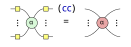
Rule (\(\boldsymbol{hh}\)).
Two consecutive Hadamards cancel. Colour-changing an endpoint supplies the second Hadamard on its leg.
Lemma 3.6.4.
A phase on one endpoint of a scalar pair can be removed when the opposite-colour endpoint is unphased.
Lemma 3.6.1.
An isolated unphased spider is the product of two unphased single-wire pairs.
Scalar correction in the example.
Let \(T\) be the triple-wire scalar, of value \(1/\sqrt2\). Each Hadamard edge supplies one factor of \(1/\sqrt2\).
At the positive spider there are eight edges before and after the rewrite. The negative leaf removes one edge, giving \(T\). At the pivot, seven edges become two, including the edge of the detached pair. This gives \(T^5\) more, hence \(T^6\) altogether.
Scalar Completeness
Theorem 5.5.2. We can rewrite any non-zero scalar Clifford diagram \(D\) to a unique normal form:
\(\mathsf{ZX}\vdash\boxed{D}=\left(\boxed{D_1}\right)^{n}\,\boxed{D_2}\,\boxed{D_3}\)
where
\(D_1\in\)\(\bigl\{\),\(\bigr\}\)
\(D_2\in\)\(\bigl\{\) ,
,
,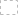
\(\bigr\}\) \(D_3\in\)\(\bigl\{\),,,\(\bigr\}\) \(=\)
\(=\)Proposition 5.5.1.
Any scalar Clifford diagram can be rewritten to be a product of the following scalar subdiagrams:
Lemma 3.6.9.
All isolated and factors can be combined until at most one \(\pm\pi/2\) phase remains.
Lemma 3.6.6.
Two complex phases can be added together.

Lemma 3.6.7.
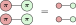
Rule (\(\boldsymbol{s}\)).
Scalar cancellation
\(=\)
Scalar Completeness
To see this is a unique representation of the scalar let \(s\) denote the value of the scalar the diagram represents.
-
\(\mathrm{Re}(s)=\mathrm{Im}(s)\) \(\bigl(\)\(=1+i\bigr)\)\(\mathrm{Re}(s)=-\mathrm{Im}(s)\) \(\bigl(\)\(=1-i\bigr)\)\(\mathrm{Re}(s)=0\) \(\bigl(\)\(=\sqrt2\,i\bigr)\)\(\mathrm{Im}(s)=0\) \(\bigl(\)\(=1\bigr)\)
As \(s\ne0\) by assumption \(D_3\) must then be the same for any diagram representing \(s\) in this normal form.
- \(D_2\in\) \(\bigl\{\) , \(\bigr\}\)
Similarly \(D_2\) tells us whether the real part of \(s\) is positive (or the imaginary part in case ), since \(D_2\) either represents \(-\sqrt{2}\) or \(1\), so that this must also be the same diagram for every representation of \(s\).
-
tells us the magnitude of \(\operatorname{Re}(s)\) (or \(\operatorname{Im}(s)\)), and hence the product \(D_1^n\) is also uniquely determined by \(s\).
AP Normal Form
recall...
Definition 5.3.1. We say a graph-like Clifford diagram is in affine with phases form (AP form) when:
- every boundary spider is connected to exactly one input or output,
- every internal spider has a phase of \(0\) or \(\pi\), and
- no two internal spiders are connected to each other.

Proposition 5.3.2. We can efficiently rewrite any Clifford diagram into an equivalent AP form.
Reduced AP Normal Form
Proposition 5.5.6. Any diagram in AP form can be transformed to reduced AP form.
\(\mathsf{ZX}\vdash\)\(D\)\(=\)\(s\)\(N\)
\(D\) a nonzero Clifford state, \(s\) a scalar, \(N\) in reduced AP form.
Proposition 5.1.8.
Every ZX-diagram can be rewritten in graph-like form. Colour-change the X-spiders, cancel pairs of Hadamards, fuse Z-spiders and remove loops and parallel Hadamard edges.
Use the scalar-accurate versions of these rewrites. Every disconnected scalar is kept beside the state.
Proposition 5.3.2.
Every Clifford diagram can be rewritten in AP form. Each internal spider has phase \(0\) or \(\pi\), and internal spiders have neighbours only on the boundary.
Colour-changing an internal spider makes it a red parity check with plain wires to precisely its boundary neighbours.
In the example the two unphased, degree-two spiders on the upper arc are identities. Removing them leaves three consecutive Hadamards. Two cancel by rule \((\boldsymbol{hh})\).
Exercise 5.11. Row addition.
Adding check \((P,b)\) to \((Q,c)\) replaces the latter by \((P\mathbin{\triangle}Q,b\oplus c)\). The first check is unchanged. Keep the scalar factors of the rewrite. Swapping two rows just exchanges their checks.

Proposition 3.6.5.
A ZX-diagram containing the isolated zero spider rewrites to the unique zero diagram for its input and output arity. An inconsistent check exposes a zero spider. Scalar completeness rewrites any detached scalar of value zero to the same spider.
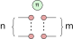
Scalar factors.
Use the scalar-accurate ZX equations. Leave each detached scalar next to the state diagram. The three-wire green–red pair has value \(1/\sqrt2\). Each copy in the example is a separate component of the diagram.
With \(r\) green checks and \(h\) Hadamard edges, a surviving AP amplitude has magnitude \(2^r(\sqrt2)^{-h}\). This gives the value of an already-detached scalar correction when comparing the two sides of a graphical rewrite. Theorem 5.5.2 puts that scalar into its diagrammatic normal form.
Zero rows.
A row \([0\mid b]\) is an isolated red spider with value \(1+(-1)^b\). For \(b=0\), this is the scalar \(2\). For \(b=1\), it gives the zero diagram by Proposition 3.6.5.
Reduced AP Normal Form
Proof. For the same nonzero \(D\), choose a pivot \(p\). Its row expresses \(x_p\) in terms of free bits.
\(\mathsf{ZX}\vdash\)\(D\)\(=\)\(\text{scalars}\)\(\operatorname{AP}(R,\vec c,\phi)\)
(example)
\(x_1=x_2\oplus x_3\)
§5.5.2. CZ within a parity set.
Take \(q\in F\). Removing \(p\!-\!q\) adds \((b+1)\pi\) to \(q\) and toggles \(q\!-\!f\) for every \(f\in F\setminus\{q\}\). The term \(x_q^2=x_q\) gives the extra \(\pi\).
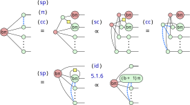
§5.5.2. CZ outside a parity set.
Take \(q\notin\{p\}\cup F\). Removing \(p\!-\!q\) adds \(b\pi\) at \(q\) and toggles \(q\!-\!f\) for each \(f\in F\). The opposite endpoint may be a pivot of another row.
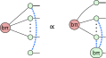
Remark 5.5.5.
If \(F=\varnothing\), the row fixes \(x_p=b\). A local phase \(\alpha\) contributes the scalar \(e^{i\alpha b}\), and a CZ from \(p\) to \(q\) contributes the phase \(b\pi\) at \(q\).

Rule (sp). Spider fusion.
Spiders of the same colour joined by a plain wire fuse, adding their phases modulo \(2\pi\).
Lemma 5.1.5.
Two parallel Hadamard edges between the same two spiders cancel up to a nonzero scalar. Keep this scalar with the other detached factors.
Definition 5.5.3. Reduced AP form.
\(A\) is in reduced row echelon form with no zero rows. The phase polynomial uses only free variables of \(A\vec x=\vec b\), and its coefficients lie in \((-1,1]\).
§5.5.2. Moving the phase off a pivot.
For a \(\pi\) phase, push it onto the other bits in that row. If the parity bit is \(1\), retain the scalar \(-1\).

For a \(\pm\pi/2\) phase, use Lemma 5.2.9 in reverse. The pivot loses its phase, its other row neighbours get the opposite half phase, and each CZ between two bits of the row is toggled. Keep all scalar factors.
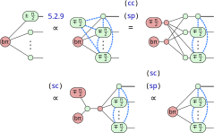